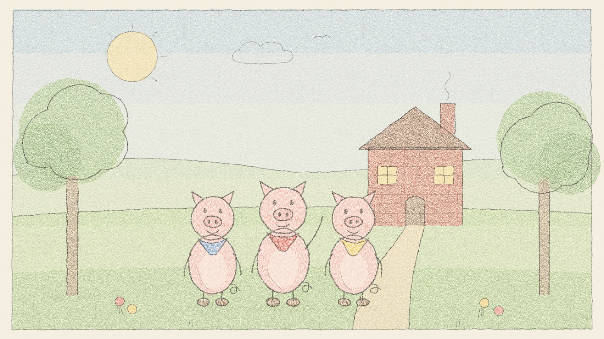

Ba chú heo con: truyện kể trước giờ ngủ cho bé, bản kể lại (theo Joseph Jacobs)
Ba chú heo con, kể lại bằng lời của chúng tôi, theo truyện cổ nước Anh của Joseph Jacobs. Ba ngôi nhà, một con sói thổi phù phù và một chú heo con thật thông minh, không ai bị đau cả. Trong tập này: - Nhà rơm, nhà gỗ và nhà gạch - Củ cải, quả táo và chiếc thùng đánh bơ lăn xuống dốc - Con sói chui ống khói và rơi tõm vào nồi nước lạnh Nguồn: Three Little Pigs, Joseph Jacobs, D. L. Ashliman Nhạc: Kevin MacLeod (incompetech.com), CC BY 4.0 Những câu chuyện nhẹ nhàng cho giờ đi ngủ và giờ kể chuyện, được kể chậm rãi bằng một giọng đọc ấm áp. luongnv.com/podcast/stories
Nghe trên Once Upon a Time Show Tải MP3 Lời kể
Truyện này còn có bản: English, Français
Dựa theo Three Little Pigs
Lời kể
Người kể chuyện: Chào mừng các bạn đến với Once Upon a Time Show. Đến giờ nghe chuyện trước khi ngủ rồi. Chào bé yêu. Bé kéo chăn lên thật cao, nằm cho thật ấm nhé. Câu chuyện tối nay đã có từ rất, rất lâu rồi, ở tận nước Anh xa xôi. Ngày xưa, có một ông tên là Joseph Jacobs đã ghi lại chuyện này, trong một cuốn sách truyện cổ nước Anh. Đây là chuyện về ba chú heo con, ba ngôi nhà nhỏ, và một con sói to cứ thổi phù phù. Bé sẵn sàng chưa? Mình bắt đầu nhé. Ngày xửa ngày xưa, hồi mà loài heo còn biết nói vần, có một heo mẹ với ba chú heo con. Cả nhà sống chung trong một căn nhà nhỏ, lúc nào cũng rộn ràng. Ba chú heo con lớn lên từng ngày, mỗi ngày một to hơn. Chẳng bao lâu, căn nhà nhỏ đã chật chội quá rồi, mà thức ăn thì không còn đủ cho cả nhà nữa.
Thế là một buổi sáng, heo mẹ hôn lên mũi từng đứa con. Các con yêu của mẹ, heo mẹ nói, đến lúc các con đi ra thế giới rộng lớn rồi. Mỗi đứa hãy tự xây cho mình một ngôi nhà. Các con ngoan, và nhớ cẩn thận nhé. Ba chú heo con vẫy tay chào mẹ. Rồi cả ba lên đường, lon ton, lon ton, cái đuôi xoăn tít nhún nhảy phía sau. Chú heo thứ nhất gặp một bác nông dân đang vác một bó rơm thật to. Bác ơi, chú heo hỏi, bác cho cháu bó rơm này để cháu dựng nhà được không ạ? Bác nông dân gật đầu, và chú heo thứ nhất dựng một ngôi nhà bằng rơm. Ngôi nhà rơm mềm mềm, vàng óng, xong ngay trước giờ ăn trưa. Thế là chú heo thứ nhất nằm xuống, làm một giấc ngủ trưa thật ngon.
Chú heo thứ hai gặp một bác mang một bó cành cây. Bác ơi, bác cho cháu bó cành cây này để cháu dựng nhà được không ạ? Bác gật đầu, và chẳng mấy chốc đã có một ngôi nhà gỗ nhỏ, hơi xiêu vẹo một chút, nhưng rất ấm cúng. Nhưng rồi trên con đường ấy, có một con sói đi tới. Một con sói xám to đùng, bụng đói meo. Sói gõ cửa ngôi nhà rơm. Heo con ơi, heo con ơi, cho ta vào với! Không, không, chú heo thứ nhất đáp, cháu thề có sợi râu trên cái cằm nhỏ xíu của cháu! Vậy thì ta sẽ thổi phù, thổi phù, cho nhà ngươi bay mất! con sói nói. Thế là sói thổi phù, rồi lại thổi phù, và vù! Rơm bay tứ tung khắp nơi. Nhưng chú heo thứ nhất nhanh lắm. Chú chạy nhanh hết sức đôi chân bé xíu, chạy một mạch tới ngôi nhà gỗ.
Rồi con sói đến trước ngôi nhà gỗ. Heo con ơi, heo con ơi, cho ta vào với! Không, không, tụi cháu thề có sợi râu trên cái cằm nhỏ xíu! Thế là sói thổi phù, thổi phù, thổi mãi, thổi mãi, và rầm! Cành cây đổ hết xuống đất. Hai chú heo con chạy vụt ra ngoài, chạy thật nhanh tới cuối con đường. Còn chú heo thứ ba thì đã gặp một bác chở một xe gạch. Bác ơi, bác cho cháu chỗ gạch này để cháu xây nhà được không ạ? Bác đưa gạch cho chú, và chú xây một ngôi nhà thật chắc chắn. Ngôi nhà có tường gạch đỏ thật dày, một cánh cửa gỗ thật nặng, và một ống khói cao trên mái. Cốc, cốc, cốc! Mở cửa cho tụi anh vào với! hai anh em kêu lên. Hai chú chạy ùa vào, và chú heo thứ ba đóng chặt cửa lại.
Chẳng bao lâu, con sói tới. Heo con ơi, heo con ơi, cho ta vào với! Không, không, cháu thề có sợi râu trên cái cằm nhỏ xíu! Vậy thì ta sẽ thổi phù, thổi phù, cho nhà ngươi bay mất! Thế là sói thổi phù, rồi thổi phù, rồi lại thổi phù, tới khi hai má tròn vo và đỏ ửng. Nhưng ngôi nhà gạch vẫn đứng yên. Không nhúc nhích một chút nào. Ba chú heo con vẫn an toàn và ấm áp ở bên trong. Con sói ngồi xuống nghĩ ngợi. Đã không thổi đổ được nhà, thì có lẽ phải lừa cho chú heo con đi ra ngoài. Thế là sói nói vọng qua cánh cửa, bằng cái giọng ngọt ngào nhất của mình. Heo con ơi, ta biết có một cánh đồng củ cải rất ngon, ở ruộng của ông Smith. Sáu giờ sáng mai ta sẽ qua đón, rồi mình cùng đi nhé. Được thôi, chú heo con đáp.
Nhưng chú heo con thông minh lắm. Chú dậy từ lúc năm giờ, chạy ra ruộng. Chú nhổ củ cải đầy một nồi, rồi về tới nhà trước khi con sói kịp đến. Sáu giờ, sói gõ cửa. Heo con ơi, xong chưa? Xong chưa á? chú heo con cười. Cháu đi rồi về từ lâu rồi, có cả một nồi đầy củ cải cho bữa tối đây này! Con sói bực lắm. Heo con ơi, sói nói, ta biết có một cây táo rất đẹp, ở dưới Vườn Vui. Năm giờ sáng mai ta sẽ qua đón nhé. Thế là chú heo con dậy từ lúc bốn giờ, chạy đi hái táo. Nhưng cây táo ở xa, mà lại phải trèo lên thật cao. Đúng lúc chú đang trèo xuống, thì chú thấy con sói đang đi tới! Táo có ngon không? con sói hỏi. Ngon lắm ạ, chú heo con đáp. Để cháu ném cho một quả nhé! Rồi chú ném quả táo thật xa, xa tới mức sói phải chạy đi nhặt. Trong lúc đó, chú heo con nhảy xuống và chạy một mạch về nhà.
Hôm sau, con sói lại tới. Heo con ơi, chiều nay trong thị trấn có hội chợ. Có đi không? Có chứ, chú heo con nói. Mấy giờ ạ? Ba giờ, con sói đáp. Thế là chú heo con lại đi sớm, như mọi lần. Ở hội chợ, chú mua một chiếc thùng đánh bơ. Đó là một cái thùng gỗ tròn to, dùng để làm bơ. Chú đang mang thùng về nhà, đi trên đồi, thì thấy con sói đang tới. Làm sao bây giờ? Nhanh như chớp, chú chui tọt vào trong thùng để trốn. Nhưng cái thùng bị nghiêng! Rồi nó lăn tròn, lăn tròn xuống dốc, lộc cộc, lộc cộc, mà chú heo con vẫn ở bên trong. Con sói thấy một vật gì tròn tròn to tướng đang lăn về phía mình. Sói sợ quá trời! Sói quay đầu chạy một mạch về nhà, chẳng đi hội chợ gì nữa.
Sau đó, con sói kể cho chú heo con nghe về cái vật tròn tròn đáng sợ ấy. Chú heo con cười khúc khích. Là cháu đó! Cháu ngồi trong thùng đánh bơ, lăn xuống dốc đó mà! Lần này thì con sói giận lắm. Ta sẽ chui xuống ống khói, sói nói, và ta sẽ bắt được chú heo con! Rồi sói trèo lên mái nhà. Nhưng các chú heo con nghe thấy tiếng sói trên mái. Sột soạt, sột soạt. Nhanh lên, chú heo thứ ba nói, giúp em khiêng cái nồi to! Ba anh em đặt một nồi nước lạnh thật to ngay dưới ống khói. Sói tụt xuống, tụt xuống, tụt xuống, và tõm! Sói rơi ngay vào nồi nước lạnh, ngập tới tận mũi. Brừ! Ôi, brừ! con sói kêu lên. Lạnh quá, lạnh quá đi mất!
Sói nhảy ra ngoài, người ướt sũng, nước nhỏ tong tong. Rồi sói chạy ra cửa, lên đồi, chạy thật xa, thật xa vào trong rừng. Và từ đó, sói không bao giờ quay lại làm phiền ba chú heo con nữa. Ba chú heo con cười vang, ôm nhau thật chặt. Rồi cả ba cùng nấu củ cải và táo. Ba anh em ăn một bữa tối thật vui, cùng nhau trong ngôi nhà gạch. Chú heo thứ nhất nói: lần sau, anh cũng sẽ xây nhà bằng gạch. Chú heo thứ hai nói: anh cũng vậy. Và hai chú đã làm đúng như thế. Chẳng bao lâu, trên đồi có ba ngôi nhà thật chắc chắn, đứng cạnh nhau. Và cứ chủ nhật, ba anh em lại về thăm mẹ. Heo mẹ tự hào lắm về ba đứa con khéo léo của mình. Đúng là, có công mài sắt, có ngày nên kim.
Và bây giờ, ngôi nhà gạch đã yên tĩnh rồi. Bếp lửa đã dịu xuống, ba chú heo con đã nằm cuộn tròn trong chăn, thật ấm áp. Bên ngoài, ánh trăng sáng trên ngọn đồi, gió thổi thật nhẹ, thật êm. Chẳng còn ai thổi phù phù nữa. Mọi thứ đều yên lặng. À ơi, bé ngủ cho ngoan. Bé nhắm mắt lại nhé. Bé đang an toàn và ấm áp, giống như ba chú heo con vậy. Once Upon a Time Show chúc bé ngủ ngon và có những giấc mơ thật đẹp.